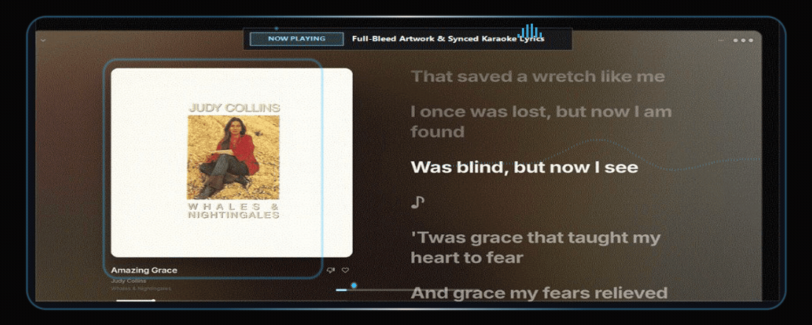

Less interface.
More music.
YouTube Music on your desktop reimagined with Apple Music aesthetics & fluid Liquid Glass. Built natively in Flutter with instant 60fps response, synchronized karaoke lyrics, and 3D spatial acoustics.

Engineered to Feel Native
A native computer app rather than another heavy browser tab.
Fluid Liquid Glass UI
Custom-built acrylic glass surfaces that dynamically sample album artwork, flowing through refractive caustic light and ultra-smooth backdrop blur.
Time-Synced Lyrics
Word-by-word shining karaoke animation. Active lines expand smoothly and float with spring physics.
Pure Native Performance
Compiled directly to C++ and Flutter engine. Zero chromium tab overhead, instant search, and zero frame drops on 10,000+ item playlists.
Dolby-Inspired 3D Spatial Audio
HRTF 3D virtual speaker positioning at ±35°, crossfeed delay simulation, and convolution reverberation that places you in a Studio, Room, or Concert Hall.
Built for Your PC, Not the Browser
See how Mercury compares against the official web interface on Windows.
| Feature / Capability | MERCURY Desktop | Standard Web / PWA |
|---|---|---|
| Framework & Architecture | Flutter / C++ Native | Chromium Browser Tab |
| User Interface Style | Liquid Glass Frosted Acrylic | Flat Web CSS Layout |
| 10,000+ Track Scrolling | Steady 60 FPS Virtualized | Stutters & High CPU usage |
| Synced Karaoke Lyrics | Word-by-word glowing lines | Static plain text scroll |
| Local Files & Offline Playback | Full Local FLAC, MP3 indexing | Not supported |
| Windows System Media (SMTC) | Native Windows 11 Taskbar Media | Generic browser integration |